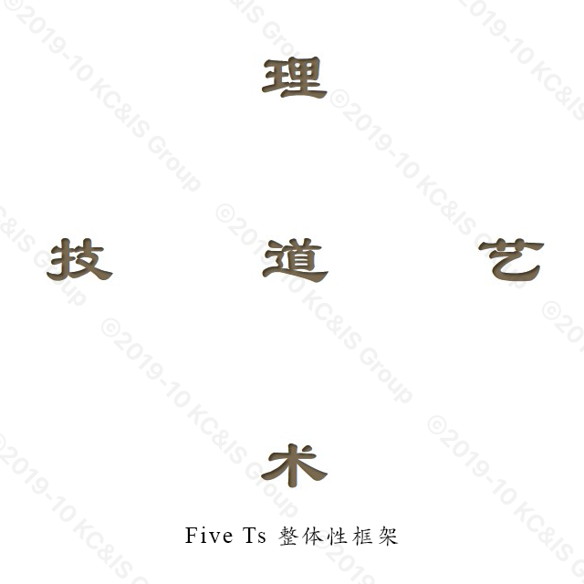
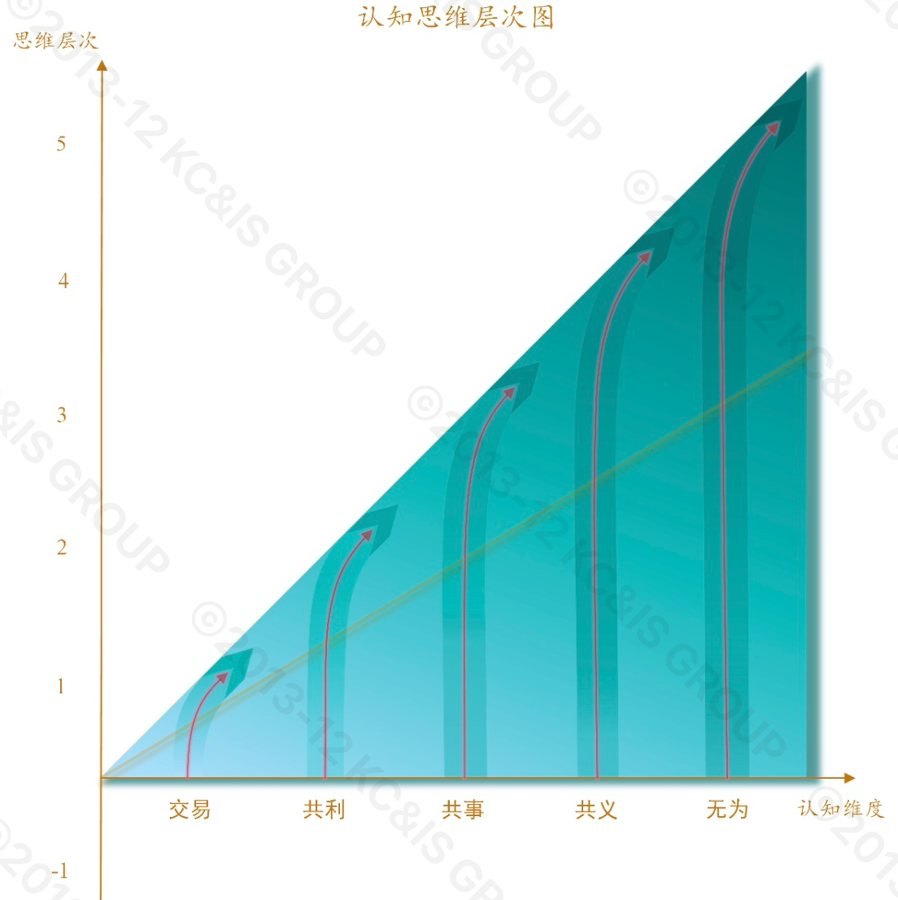
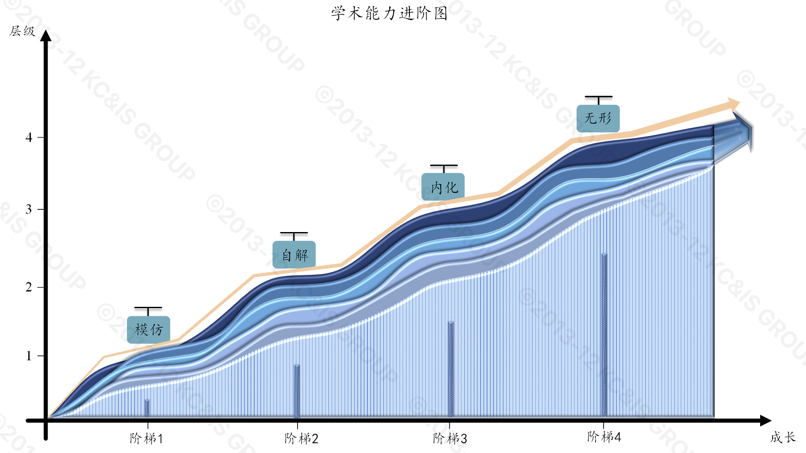

Knowledge Computing & Intelligent Software Group
知识计算与智能软件研究组

学术思想



学术风格
从实际中来到实际中去，远思虑、早启动、稳推进。
人才理念
重基础、善思想、有情怀。
关于我们
导师组：谢振平(教授，博导)、朱航宇(副教授)
2025级：叶淋潮(博)、杨海峰(博)、龚晨昊、刘雨桐、潘格非、岳瀚、张凯瑞、尹方鑫
2024级：徐威(博)、傅铖、方贺进、葛惠、葛宁、李冰冰、罗卓毅、王祥辉、喻一慧、张晗、王慧
2023级：郭梓津(无锡力捷丰科技有限公司)、李苏亚(博)、李响(上海烟草浦东专卖局)、孙思齐、张睿彦、张帅宇(博世软件创新)、杨康(绿联科技股份有限公司)、王相然、蒋奕扬(中国工商银行)
2022级：范雨祥(哔哩哔哩)、沈银萱(苏州农商行)、王炜(vivo)、赵圣杰(非全日制)、张小雨、刘晓(摩尔线程)、黎钰(中国联通软件研究院)、黄理源(腾娱互动)、丁镛焜(无锡超通智能制造)、李婷婷(博)、邵会会(博)
2021级：石恒(朗新科技)、石铖铖(梦创双杨)、陈舒雨(苏州农商行)、张昊(中国移动云能力研究中心)、时文龙(河南中烟漯河厂)、任元凯(智慧芽)、吕雯(科锐国际)、蔡思奇(极智嘉)、桑瑜(博)(苏州城市学院)
2020级：曹骏(华润上华)、翟彬(米哈游)、王钒宇(Monash University)、杨迪(中国移动云能力研究中心)、汪康(追觅科技)、孙俊(江苏银行)
2019级：李玉林(博世中国)、莫鸿飞(度小满)、覃翔宇(信通院)、张硕(南瑞集团)、周颖(汉口银行)、朱宗政(远景)
2018级：黄兆欣(临沂市中心医院)、张晶维(尚链技术)、周海(扬州卫健委)
2017级：陈梅婕(华为云计算)、马冬雪(中国重汽)、陈晓琪(无锡先研院)
2016级：任斌斌(中国联通苏州分公司)、王坤(中国重汽)、卓刘(安徽经济信息中心)
2015级：江思伟(沃太新能源)、任立园(中国联通上海分公司)
2014级：金晨(中国电信金华分公司)
2013级：孙桃(英特尔亚太研发中心)
代表性研究进展
知识计算
- A Constructivist Ontology Relation Learning Method. IEEE Transactions on Cybernetics,52(7):6434-6441, DOI:10.1109/TCYB.2021.3138452, JUL 2022.
- S2AF: An Action Framework to Self-check the Understanding Self-consistency of LargeLanguage Models. Neural Networks, 2025: 107365.
- Constructing Word-Context-Coupled Space Aligned with Associative Knowledge Relations for Interpretable Language Modeling, Findings of the Association for Computational Linguistics: ACL 2023, pages 8414–8427, July 9-14, 2023.
- 基于建构主义学习理论的个性化知识推荐算法. 计算机研究与发展，55(1):125-138, Jan 2018.
认知学习
- An Extended Reinforcement Learning Framework to Model Cognitive Development with Enactive Pattern Representation. IEEE Trans. on Cognitive and Developmental Systems, 10(3):738-750, DOI:10.1109/TCDS.2018.2796940, Sep 2018.
- Evolutionary sampling: A novel way of machine learning within a probabilistic framework. Information Sciences. 299:262-282, 2015.
- Motion Mapping Cognition: A Nondecomposable Primary Process in Human Vision, arXiv:2402.04275, Feb 2024.
- Pattern memory cannot be completely and truly realized in deep neural networks. Scientific Reports, 14(1), p.31649, Dec 2024.
元宇宙软件系统
- Space Topology Change Mostly Attracts Human Attention: An Implicit Feedback VR Driving System, IEEE VR 2023 (abstract/poster paper), pp.853-854, 25-29 March 2023, Shanghai, China.
- 基于战场环境孪生的迷彩伪装动态效果评估方法. 兵工学报， 45(1):349-362，Jan 2024.
- Visual illusion cognition dataset construction and recognition performance by deep neural networks, pp.90-94, CCIS 2022.
- A contracted container-based code component collaboration model with reusable but invisible right management. Information Processing & Management, 62(3): 104057, 2025.
联系我们
研究组地址：江苏省无锡市滨湖区蠡湖大道1800号 江南大学人工智能与计算机学院B410实验室
研究组Github主页：https://github.com/kcisgroup
研究组面向全球高校招收优秀硕士、博士研究生，具体招生情况请咨询：
本研究组属于人机融合软件与媒体技术
江苏省高校重点实验室